Um mini ERP desenvolvido para eliminar processos manuais e aumentar a eficiência nas vendas consignadas
Observando a rotina de trabalho da minha mãe, percebi que os processos na empresa onde ela atua eram totalmente manuais. Ela trabalha com vendas consignadas: retira produtos do estoque da empresa, carrega no carro e distribui entre diversos clientes revendedores. Após um mês, realiza o acerto — recolhe o dinheiro, recebe os produtos que sobraram e paga 30% de comissão aos revendedores.
O problema é que todo esse fluxo era controlado por papéis, anotações e cálculos manuais. Só em um mês, ela lida com cerca de 700 notas, o que consome muito tempo e aumenta as chances de erro.
Pensando nisso, desenvolvi um sistema web (HTML, CSS e JavaScript) que funciona como um mini ERP para automatizar totalmente esse processo.
Tela de Login
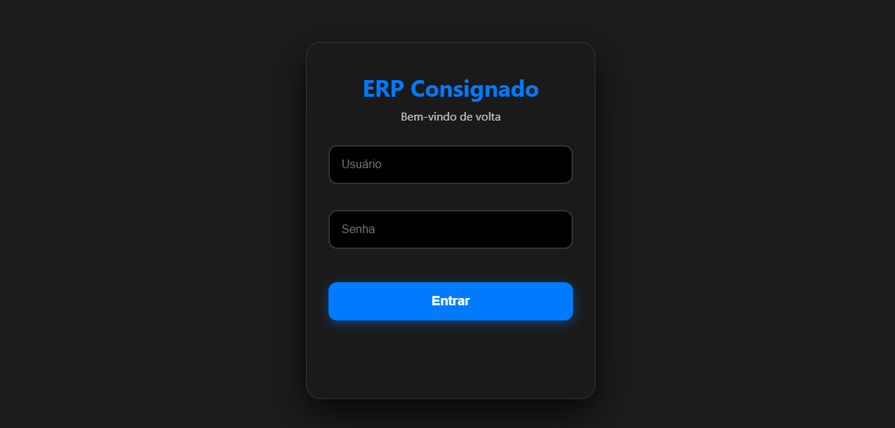
Tela de Login
O sistema conta com três tipos de acesso, cada um com permissões e funcionalidades específicas:
1. Acesso Supervisor (Gerente)
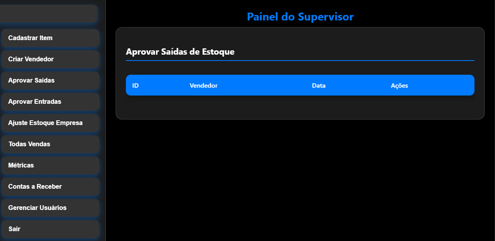
Dashboard do Supervisor
Funcionalidades do supervisor:
Ver vendas totais
Controlar vendedores
Aprovar saída de estoque para vendedores
Aprovar entrada de produtos devolvidos
Acompanhar movimentações gerais
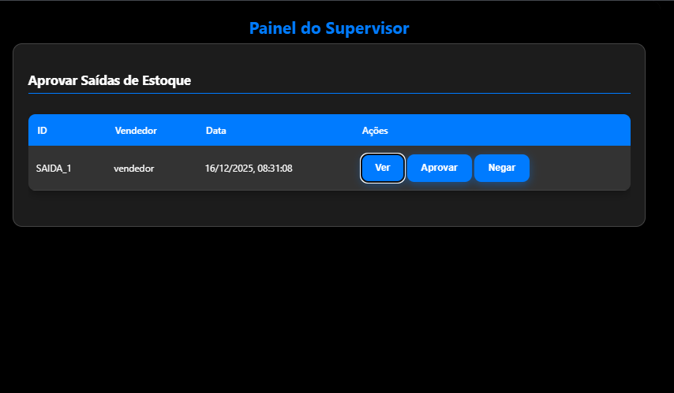
Tela de Aprovação de Saída de Estoque
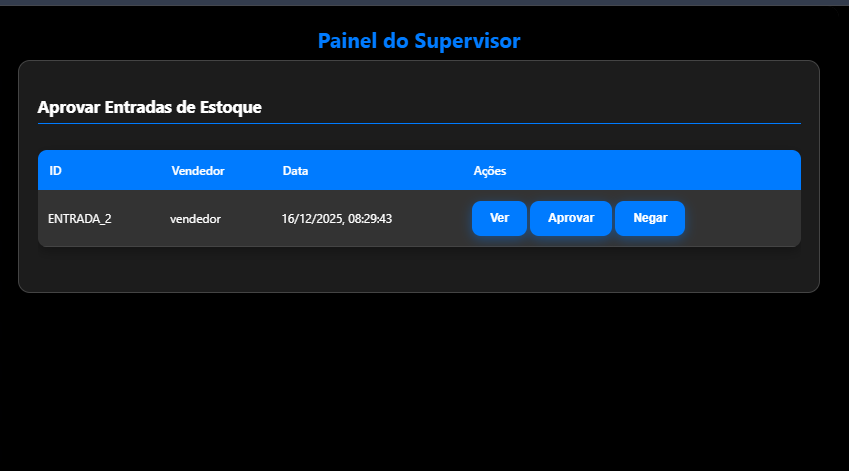
Tela de Aprovação de Entrada de Devoluções
2. Acesso Vendedor
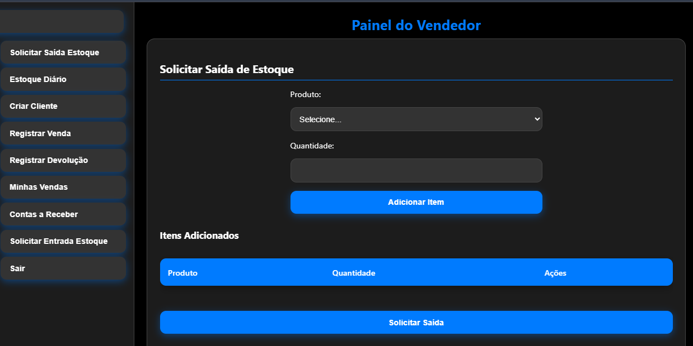
Dashboard do Vendedor
Funcionalidades do vendedor:
Registrar vendas
Ver valores a receber
Solicitar retirada de estoque da empresa
Registrar devoluções
Controlar contas a receber com comissão já calculada
Cadastrar clientes revendedores
Acompanhar seu estoque do carro
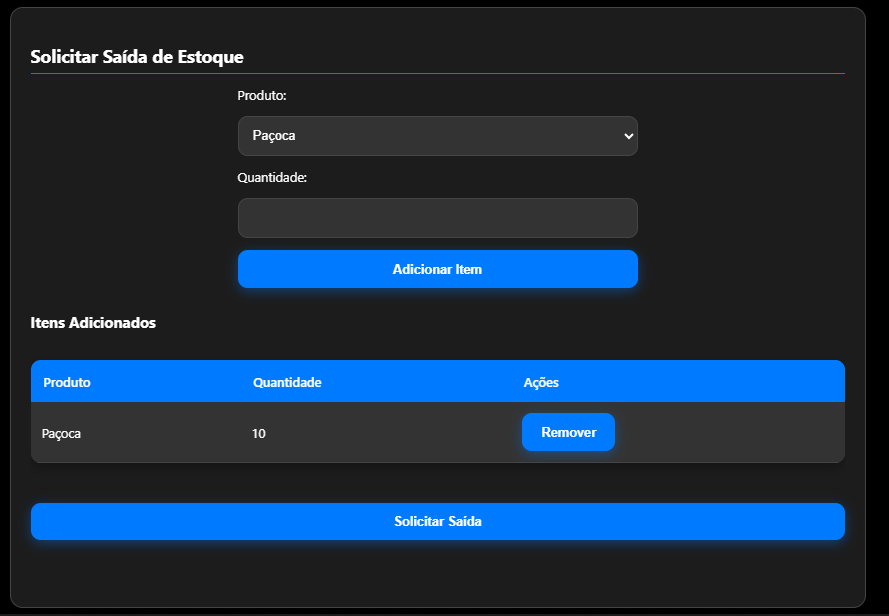
Tela de Solicitação de Saída de Estoque
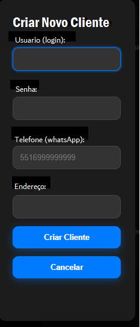
Tela de Cadastro de Clientes
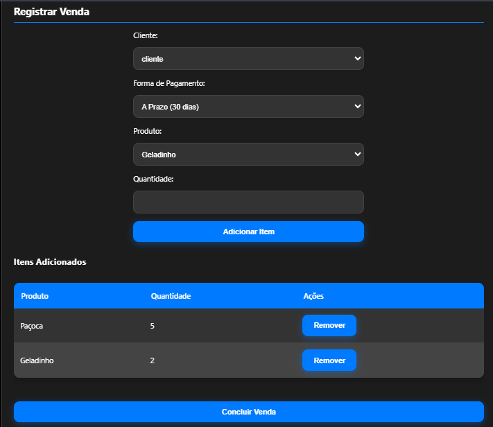
Tela de Vendas
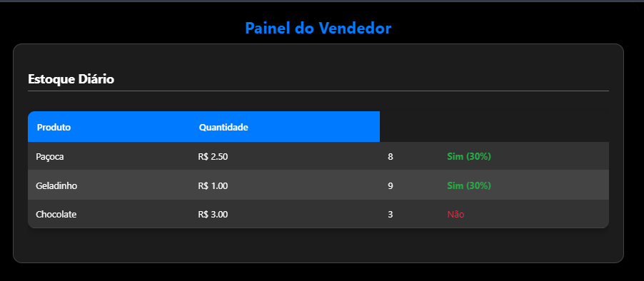
Tela de Controle de Estoque do Carro
3. Acesso Cliente Revendedor
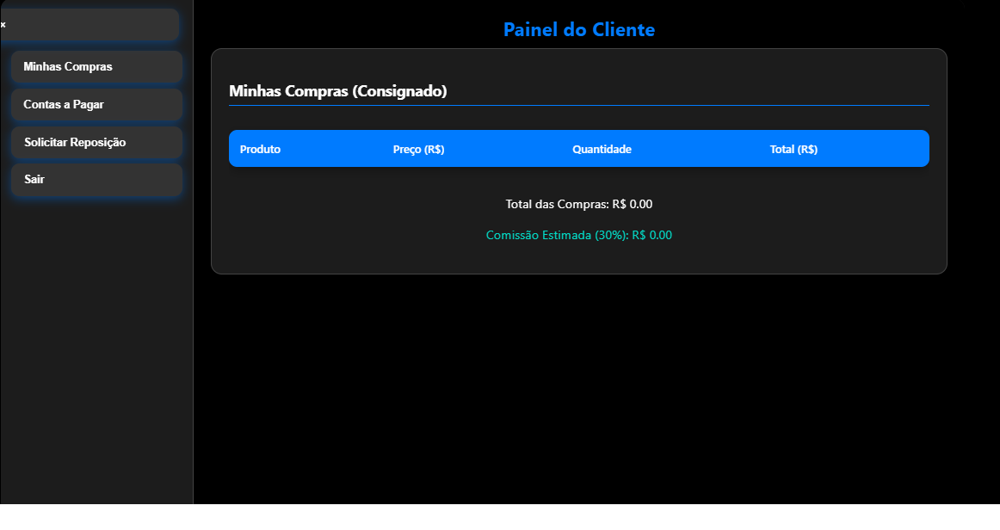
Dashboard do Cliente Revendedor
Funcionalidades do cliente revendedor:
Visualizar os produtos que recebeu
Consultar comissões a receber
Solicitar reposição de estoque
Acompanhar contas a pagar
Tela de Produtos Consignados com o ClienteTela e Solicitação de Reposição
Fluxo de Trabalho Automatizado
No início do dia, o vendedor carrega o carro com produtos da empresa.
Registra uma solicitação de saída de estoque.
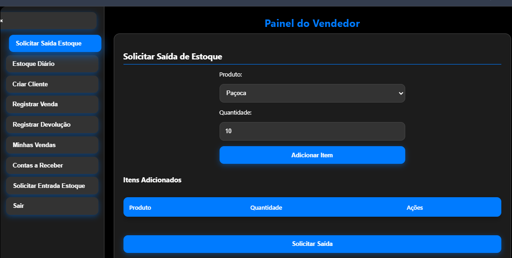
O supervisor aprova, diminuindo automaticamente o estoque da empresa e aumentando o estoque do carro.
Durante o dia, o vendedor registra vendas e devoluções.
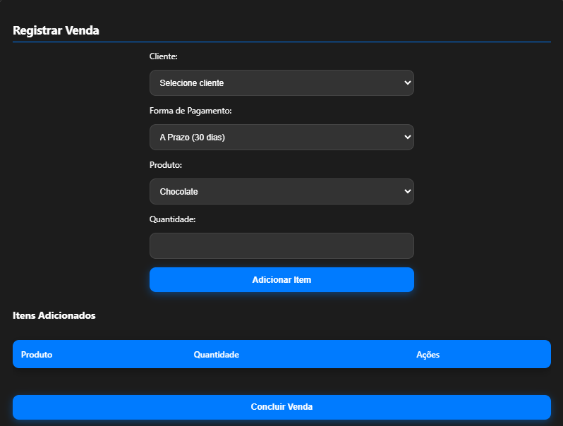
No fim do dia, descarrega o carro e registra a devolução dos itens não vendidos.
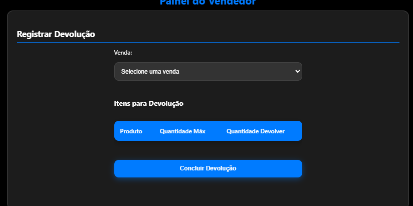
O supervisor aprova a entrada e o estoque da empresa é atualizado automaticamente.
Resultado Final
O sistema elimina o trabalho manual, substituindo blocos de notas e cálculos repetitivos por um ambiente digital organizado, rápido e seguro.
Isso reduz drasticamente o tempo gasto em atividades administrativas, permitindo que a pessoa foque no que realmente importa: vender mais e melhor.